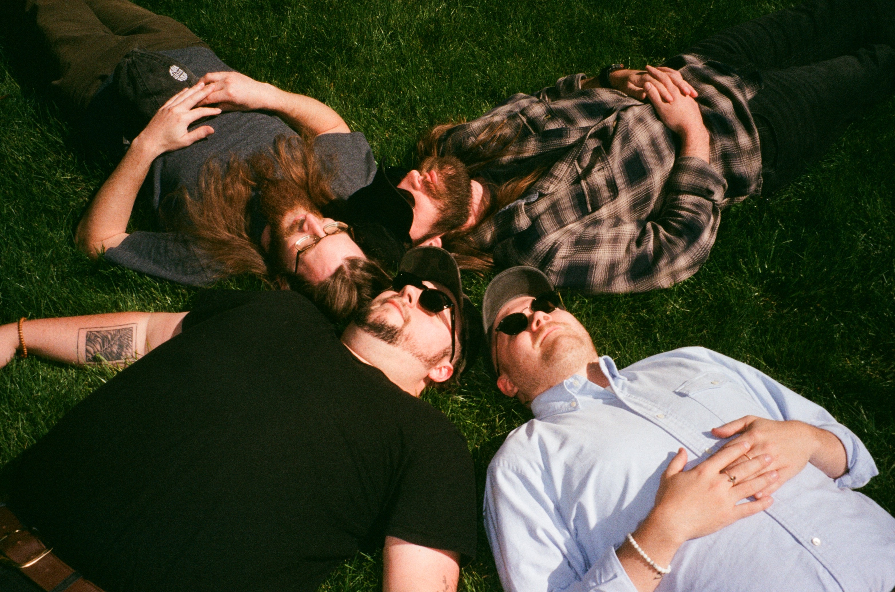

Worries

Professional Bio
Formed in the Pocono Mountains of Pennsylvania and now spread along the east coast of the United States, Worries has slowly developed their brand of earthy, emotive, indie rock for the past 10 years.
Meeting as friends with shared interest of punk music in high school, Billy Gartrell, John Paul Decker, and Luke Niemoczynski have learned their instruments, grown, and crafted their sound together, using Worries as a way to communicate with one another about their shared experience.
2014 saw their first collection of songs, Live In Miller Chapel, a set of intimate acoustic songs recorded in an empty church, soon to be fleshed out on their first true full-length, Houses, Gardens—a collection characterized by an understated eclecticism, with styles ranging from punk, indie, emo, and folk seamlessly blended along the track list. 2016 saw the release of Weeds, an addendum EP, continuing the sound of their previous record with an emphasis on focused storytelling. In 2018, the trio released a split with longtime friend, James Barrett. The result, Some Years: A Split Between James Barrett & Worries.
After a brief hiatus, Worries has regrouped in 2020, releasing another acoustic EP, Live at the Monitor—echoing their past while simultaneously signifying a new beginning.
Lineup
Projects with NTE
NTE-002: Worries, Houses, Gardens